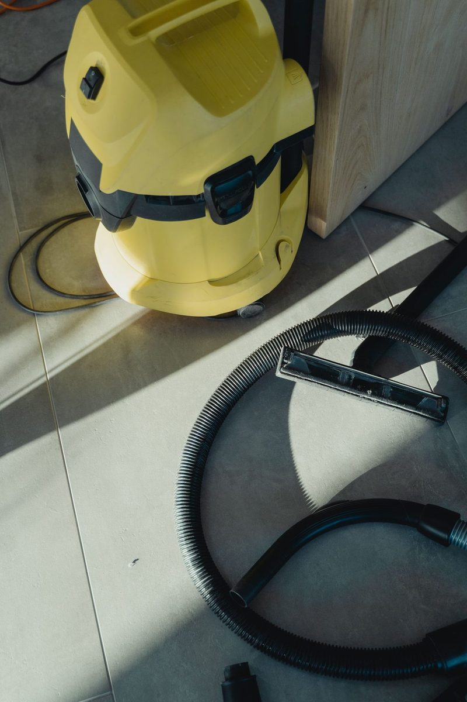

Emergency Water Extraction & Cleanup in Plano, TX
Standing water on your floors right now? Water extraction is the single most important step in limiting water damage, every gallon removed by extraction is a gallon that doesn't soak deeper into subfloor, framing and slab. Our truck-mounted extractors remove hundreds of gallons per hour, and our crew is dispatched to your Plano address 24/7. Call (214) 833-4785 now.
📞 (214) 833-4785, 24/7 Emergency Water Extraction, Crew Dispatched Immediately
- ✓ Live answer 24/7
- ✓ Truck-mounted extraction
- ✓ Homes, garages, offices and rentals
☎ Call Now: 24/7 Water Extraction Contact Us →
Act FastHow Does Emergency Water Extraction Work in Plano, TX?
Emergency water extraction removes standing and trapped water from floors, carpet, pad, wall cavities and hard surfaces using truck-mounted and portable extraction equipment. Our IICRC certified technicians arrive at your Plano address with truck-mounted extractors that pull water through heated vacuum lines at hundreds of gallons per hour, far faster than any combination of fans, shop vacs or mops. Extraction within the first hour of a water loss dramatically reduces drying time, prevents mold growth, and can save carpet, hardwood and other flooring that would otherwise need full replacement. Call (214) 833-4785.
Water Extraction Equipment We Bring to Every Plano Job
Truck-Mounted Extraction Units
Our truck-mounted extractors are the most powerful water removal tool available. Heated vacuum lines connect from the truck to your home and pull standing water, saturated carpet and pad moisture, and trapped water from hard surfaces continuously. One truck-mounted unit removes more water in 30 minutes than a shop vac removes in a full day.
Weighted Carpet Extraction Tools
For carpet that can be saved, weighted extraction tools press down on the carpet and pad, forcing trapped water upward into the vacuum head. This method can extract enough water from carpet pad to eliminate the need for pad replacement on Category 1 (clean water) losses, saving hundreds to thousands of dollars in materials and labor.
Portable Extractors
Portable extractors reach areas the truck lines can't, second floors, attics, tight closets, bathrooms and utility rooms. They also handle hard surface extraction on tile, LVP, laminate and sealed concrete.
Submersible Pumps
When garages, mechanical rooms or low areas have several inches or more of standing water, submersible pumps remove the bulk volume before extraction tools handle the remaining moisture in flooring and materials.
Injectidry Wall Cavity Systems
Water inside wall cavities can't be reached by surface extraction. Injectidry systems inject dry air directly into the wall cavity through small ports, pushing moisture out of framing, insulation and the back side of drywall. This system saves walls that would otherwise need to be cut open for drying.
Cleanup Based on Water Category
Not all water is the same, and the cleanup has to match.
Category 1 (clean): Broken supply line, faucet overflow, ice maker line. Usually the most materials can be saved.
Category 2 (gray): Washing machine or dishwasher discharge. Needs extraction plus antimicrobial treatment.
Category 3 (black): Sewage, toilet backups with waste, outdoor floodwater. Porous materials are removed and everything is sanitized. See our sewage cleanup page.
Clean water can turn gray or black if it sits too long, which is another reason to start standing water cleanup in Plano quickly.

Types of Water Extraction We Handle in Plano
Carpet and Pad Extraction
Carpet holds water on the surface and in the fibers. Carpet pad, the foam or rubber layer underneath, holds water like a sponge and is the primary source of odor and mold after a water loss. We extract from both layers. On Category 1 (clean water) losses caught within 24 hours, we can often save both carpet and pad. On Category 2 or 3 losses, or losses older than 48 hours, pad must be removed and replaced. See wet carpet drying.
Hardwood Floor Extraction
Hardwood floors cup, buckle and delaminate when water sits underneath them. Our extraction process uses weighted tools and floor mat systems that draw moisture through the wood grain without pulling boards up. Early extraction, within the first 12 to 24 hours, is the difference between saving a $15,000 hardwood floor and replacing it. See hardwood floor water damage.
Tile and Hard Surface Extraction
Water on tile, LVP, laminate and sealed concrete may look simple, but the real damage is underneath, in the thin-set, subfloor, and slab surface. Our extractors and moisture meters locate water trapped below hard surfaces that would be missed by mopping or toweling.
Commercial Water Extraction
Offices, retail spaces, restaurants and multi-family properties need rapid extraction to protect inventory, equipment, tenant improvements and business operations. Our truck-mounted units and commercial-capacity portable extractors handle large floor areas fast. See commercial water damage restoration.
Why Extraction Speed Matters More Than Anything Else
| Method | Water Removal Rate | Result |
|---|---|---|
| Towels and mops | 2-5 gallons per hour | Surface only, water stays in pad, subfloor, walls |
| Shop vac | 10-20 gallons per hour | Partial surface removal, can't extract from pad or cavities |
| Box fans + open windows | 0 gallons removed (evaporation only) | Dries surface, mold grows underneath |
| Truck-mounted extraction | 200-500+ gallons per hour | Removes water from carpet, pad, subfloor surface, wall base |
Professional extraction removes water 1,200 times faster than evaporation alone. That speed is why the IICRC S500 standard lists extraction as the first action after source control, before any drying equipment is placed.
What to Do While Our Plano Crew Is On the Way
Shut off the main water valve or the valve to the leaking fixture.
Turn off power to wet rooms at the breaker if it's safe to reach.
Move electronics, rugs and valuables to a dry area.
Put foil or plastic under furniture legs sitting on wet carpet.
Take photos and video of everything for your insurance claim.
Do not use a household vacuum on water. It's unsafe and won't keep up.
If you're wondering how to get standing water out of a house fast, the honest answer is professional extraction. Towels and shop vacs just buy time.
Common Water Extraction Scenarios in Plano
Burst Attic Pipe: Water on Every Floor
Homes in Preston Meadow, Kings Ridge, Deerfield and Hunters Glen with attic plumbing see water cascade from the attic through ceilings and walls to every level. Extraction starts at the lowest point and works up, with ceiling drywall removed to drain trapped water from above.
Slab Leak: Water Under Flooring
When a copper line fails under a Plano slab, water migrates under tile, carpet and hardwood across the entire slab surface. FLIR thermal imaging maps the full extent, then we extract from flooring and place slab-directed air movers and LGR dehumidifiers. See slab leak water damage.
Storm Flooding: Garage and Ground Floor
Properties near Spring Creek, Rowlett Creek and low-lying areas of East Plano can take on several inches of storm water. Submersible pumps handle the bulk, then truck-mounted extractors pull remaining moisture from flooring and walls. Storm water is Category 3, all porous materials must be removed after extraction. See flood damage restoration.
After Extraction: Drying and Odor Control
Extraction is step one. Once water is out, we set up structural drying, apply antimicrobial treatment to affected surfaces, and handle odors so the house doesn't smell musty a week later. We come back daily to measure moisture until everything is dry.
Water Extraction FAQs
Can I wait until morning to call for water extraction? +
No. Every hour water sits on your floors, it wicks higher into drywall, soaks deeper into subfloor and framing, and moves closer to the 24-to-48-hour mold growth window. Call (214) 833-4785 any hour, our crew is dispatched immediately, not scheduled for the next business day.
Will my carpet need to be replaced after flooding? +
It depends on the water category and how long the water sat. Category 1 (clean water) losses extracted within 24 hours can often save both carpet and pad. Category 2 or 3 losses, or any loss where water sat more than 48 hours, typically require pad replacement at minimum. We assess on-site and give you a clear answer before proceeding. Call (214) 833-4785.
Do you extract water from hardwood floors without removing them? +
Yes, if caught early. Our weighted extraction tools and floor mat systems pull moisture through the wood grain without pulling boards up. The window is typically 12 to 24 hours after the water loss. After that, cupping and buckling may make removal necessary. Call (214) 833-4785 immediately if your hardwood floors are wet.
How do I know if there's water inside my walls? +
You may not see it. FLIR thermal imaging shows temperature differences caused by moisture behind drywall, under flooring and inside wall cavities, without cutting anything open. We include thermal imaging on every extraction call. See moisture mapping inspection.
Standing Water? Call for Water Damage Cleanup in Plano Now
Don't let water sit another hour. Call Blackland Restoration Co., and we'll dispatch an extraction crew immediately to pump it out, protect your floors and start drying.
☎ Call (214) 833-4785Standing Water in Your Plano Home Right Now? Call (214) 833-4785
Every minute extraction is delayed, water soaks deeper into materials that will cost more to dry and more to replace. Call (214) 833-4785 now, 24/7 live answer, truck-mounted extraction crew dispatched to your Plano address immediately.
☎ Call (214) 833-4785Don't Wait on Water Damage
- ✓ Live answer 24/7, every day of the year
- ✓ Crew dispatched immediately
- ✓ On-site assessment
- ✓ Insurance-ready documentation